Rules digest · Law of Root Oct 2025 · Base game · Unofficial
Might andRight in the wood!
A Game of Woodland Might and Right
Root is an asymmetric war game for 2–4 players. Cats build an empire, birds obey
their Decree, the Alliance stirs up revolt and a lone Vagabond plays every side. Everyone shares one
deck and one map of 12 clearings, and the first to 30 points wins.
Rivers · do nothing in the base game (on Winter they split forests).
Who rules?
You rule a clearing if you have more warriors + buildings there than each other player. Tokens (wood, sympathy, the keep) and the Vagabond pawn don't count. A tie means nobody rules, except the Eyrie, who win ties where they have a piece.
To move, you must rule the clearing you leave or the one you enter.
FIG. 02A 4-player start: keep in the top-left, Marquise warriors everywhere but the opposite corner, the Eyrie in that opposite corner, the Vagabond in a forest. The Alliance starts with nothing on the map.
Seats · random first player and seating.
Score markers · all on 0.
Hands · shuffle; everyone draws 3. In a 2-player game, take out the 4 dominance cards first.
Ruins · in the four "R" slots.
Item supply · 2 boots, 2 bags, 1 crossbow, 1 hammer, 2 swords, 2 tea, 2 coins on the top edge.
Dice & overviews · near the map.
Factions set up in order: Marquise → Eyrie → Alliance → Vagabond.
AMarquisefirst
1Supply: 25 warriors, 8 wood.
2Keep in any corner.
31 warrior in every clearing except the opposite corner.
41 sawmill, 1 workshop, 1 recruiter in the keep clearing and/or next to it.
5Other 15 buildings on the tracks, right to left.
BEyriesecond
1Supply: 20 warriors.
21 roost + 6 warriors in a free corner, opposite the keep if possible.
3Pick 1 of 4 leaders; the rest face up beside you.
4Tuck the 2 Loyal Viziers into the columns on the leader.
56 roosts on the track, right to left.
CAlliancethird
1Supply: 10 warriors.
23 bases in the Bases box.
310 sympathy on the track.
4Draw 3 cards face down as supporters.
5Nothing on the map yet.
DVagabondfourth
1Pick a character: Thief, Tinker or Ranger.
2Pawn in any forest.
3Shuffle quests; 3 face up.
4One "R" item (bag, boot, hammer, sword) under each ruin, shuffled, back on the map.
5Starting items from the character; relationships on Indifferent.
Which factions? Add up their reach: Marquise 10, Eyrie 7, Vagabond 5, Alliance 3. You need 17+ for 2 players, 18+ for 3 and 21+ for 4. With the base box that means Marquise + Eyrie for 2 players, and the Marquise plus any two for 3. The Winter map (back of the board) deals the 12 suit markers onto the clearings at random; Learning to Play recommends it only for experienced players.
Four factions enter the forest!
The cast
Every faction plays a different game. Two are militant (start big, fight for territory), two are insurgent (start small, sneak up). Full playbooks ↓
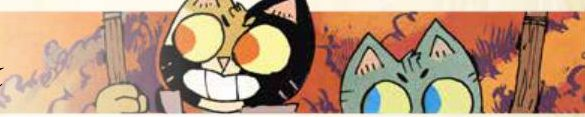
A
Marquise de Cat
Militant · reach 10 · orange
Has already occupied the Woodland. Spends wood to place sawmills, workshops and recruiters; each building scores more than the last of its type.
Abilities: the Keep (only she may place pieces in its clearing) · Field Hospitals (spend a matching card to send dying warriors back to the keep). Weak spot: wood only flows through clearings she rules.
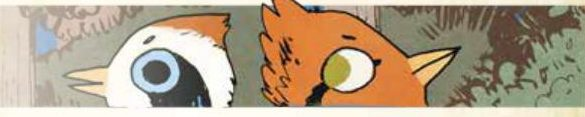
B
Eyrie Dynasties
Militant · reach 7 · blue
Score every Evening for the roosts on the map. Each turn they add cards to their Decree and must carry out every order on it, or fall into turmoil.
Abilities: Lords of the Forest (rule tied clearings) · Disdain for Trade (items score only 1). Weak spot: one impossible order costs them points and their leader.
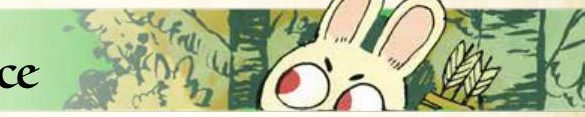
C
Woodland Alliance
Insurgent · reach 3 · green
Spends supporters to spread sympathy; each token scores. Two supporters spark a revolt that wipes a clearing and founds a base.
Abilities: Guerrilla War (defends with the higher roll) · Outrage (anyone who moves into or removes sympathy pays a card). Weak spot: losing a base costs supporters and officers.
D
Vagabond
Insurgent · reach 5 · grey
One pawn with a pack of items. Scores by aiding factions, beating up hostile ones and finishing quests.
Abilities: Lone Wanderer (not a warrior, never rules, can't be removed) · Nimble (moves whoever rules). Weak spot: every hit damages an item.
Turn structure
1
Birdsong
Morning upkeep. Each faction does its own thing:
Marquise: wood at each sawmill.
Eyrie: add 1–2 cards to the Decree.
Alliance: revolt, spread sympathy.
Vagabond: refresh items, slip.
Dominance wins are checked at the start of your Birdsong.
2
Daylight
The main phase: craft, move, battle, build, recruit. Each faction has its own list of actions and limits.
Dominance cards are played and taken in Daylight.
3
Evening
Score (Eyrie), take military operations (Alliance) or rest (Vagabond). Then draw 1 card + bonuses and discard down to 5.
Then the next player clockwise starts.
Winning: the first to 30 points wins at once, even in someone else's turn. Anyone scores +1 for each enemy building or token removed, and the printed points for crafting an item.
FIG. 03The Eyrie roll 3 and 0 but have only 2 warriors, so they deal 2 hits: one cat warrior, then the workshop (+1 point).
1
Pick a fight
Any clearing with your warriors; any enemy there defends. No rule needed.
2
Ambush?
The defender may play a matching ambush card: 2 hits at once. The attacker can cancel it with their own matching ambush.
3
Roll
Both dice. Attacker takes the higher, defender the lower (the Alliance reverses this when defending).
4
Cap
Rolled hits can't exceed your warriors in the clearing. The Vagabond's cap is his undamaged swords.
5
Extras
Card effects add extra hits (no cap). A defender with no warriors is defenseless: +1 hit.
6
Remove
The side taking hits chooses, but warriors go first, then buildings and tokens. +1 point per enemy building or token.
Crafting
Cost · the icons in the card's bottom-left corner. Activate one crafting piece per icon, in a clearing of that suit. "?" means any suit.
Crafting pieces · Marquise workshops, Eyrie roosts, Alliance sympathy, Vagabond hammers. Each works once per turn (the Vagabond's hammers don't have this limit).
Items · take the item from the map supply into your Crafted Items box and score the points. No item left in the supply, no craft.
Persistent effects stay in your play area. No duplicates.
One-shots (the three Favor cards) remove every enemy piece in clearings of their suit.
Crafted items don't help most factions directly. They score points, and the Vagabond can take one when he aids you, which is why he likes friends who craft.
FIG. 04Piece glossary: warriors and buildings count for rule, tokens do not. Bottom right: each faction's crafting piece.
Item
Cards
In supply
Points
Boots
4
2
+1
Bag
4
2
+1
Crossbow
2
1
+1
Hammer
1
1
+2
Sword
3
2
+2
Tea
3
2
+2
Coins
3
2
+3
Card type
How many
Item cards
20 cards, but only 12 items in the supply. Late in the game, item cards become suit-only.
Persistent
22 cards: Armorers, Sappers, Brutal Tactics, Royal Claim, Cobbler, Command Warren, Better Burrow Bank, Codebreakers, Scouting Party, Stand and Deliver!, Tax Collector.
Favors
3 cards, one per clearing suit, each costing three of that suit.
Not craftable
5 ambush + 4 dominance.
Know your faction
Playbooks
Each faction's full turn, its board numbers and how it scores. Numbers marked board are printed on the faction board, not in the Law. Check them against your own.
A
Marquise de Cat
Industry and occupation. Score by building; build with wood; move wood through clearings you rule.
Her turn
Birdsong
Place 1 wood at each sawmill.
Daylight
Craft with workshops. Then 3 actions, +1 per bird card spent:
Battle.
March: two moves.
Recruit: 1 warrior at every recruiter (once per turn).
Build: in a clearing you rule; pay wood from connected clearings you rule; score the uncovered space.
Overwork: spend a card matching a sawmill's clearing for 1 wood there.
Evening
Draw 1 + uncovered draw bonuses, discard to 5.
Building #
2
3
4
5
6
Wood cost
1
2
3
3
4
Sawmill VP
1
2
3
4
5
Workshop VP
2
2
3
4
5
Recruiter VP
1
2
3
3
4
Board · building #1 of each type is placed in setup · some recruiter spaces hide card draw bonuses
The Keep
Only the Marquise may place pieces in the keep's clearing; others can still move in and fight. Lose the keep and it never returns.
Field Hospitals
When cat warriors are removed from a clearing, spend one card matching that clearing to put them all back at the keep. Works only while the keep stands.
Building example
She rules a rabbit clearing with an empty slot. Her next sawmill costs 3 wood, so she takes wood from a nearby mouse clearing she rules, linked through ruled clearings. She places the sawmill and scores the 3 points it uncovers. (Learning to Play, p. 11.)
Tip: sawmills feed everything, workshops craft, recruiters bring warriors and cards. Keep your territory connected, or the wood can't reach the build site.
B
Eyrie Dynasties
A programmed war machine. Every card in the Decree is a promise you must keep, every turn, forever.
Their turn
Birdsong
Emergency Orders: empty hand? Draw 1.
Add to the Decree: you must add 1 or 2 cards to any columns; at most one bird.
A New Roost: no roosts on the map? Place a roost + 3 warriors in the clearing with the fewest warriors.
Daylight
Craft with roosts. Then resolve the Decree, left to right. Every card is one action in a clearing of its suit (birds: any):
Recruit: 1 warrior at a matching roost.
Move: from a matching clearing.
Battle: in a matching clearing.
Build: a roost in a matching clearing you rule with no roost.
Any order you can't fully carry out → turmoil.
Evening
Score the rightmost empty roost space. Draw 1 + bonuses, discard to 5.
Roosts on map
1
2
3
4
5
6
7
Evening VP
0
1
2
3
4
4
5
Board · 2 roosts = 1 and 3 roosts = 2 are confirmed by Walking Through Root
Turmoil
Humiliate: −1 point per bird card in the Decree, Viziers included.
Purge: discard the Decree except the 2 Loyal Viziers.
Depose: swap to a face-up leader; tuck the Viziers where it says.
Rest: skip to Evening (you still score and draw).
Leaders
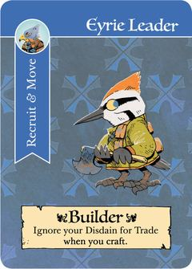
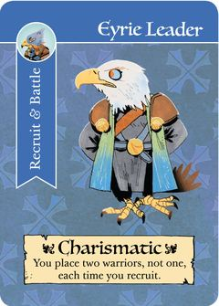
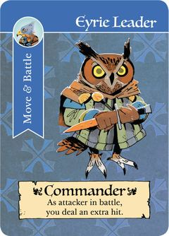
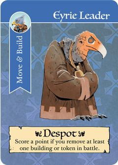
Builder: full item points · Charismatic: recruit 2 · Commander: +1 hit attacking · Despot: +1 point for buildings/tokens removed in battle.
Tip: add orders you can keep even after a bad turn. Opponents break the Eyrie by clearing out the suit their Decree needs.
C
Woodland Alliance
Slow start, explosive finish. Sympathy scores; supporters pay for everything; revolts turn the board over.
Their turn
Birdsong
Revolt (any number): a sympathetic clearing without a base, matching a base on your board. Spend 2 matching supporters. Remove all enemy pieces there; place the base, warriors equal to sympathetic clearings of that suit, and 1 officer.
Spread Sympathy (any number): an unsympathetic clearing next to sympathy (any clearing for the first). Pay supporters of its suit as printed; +1 if someone has 3+ warriors there (Martial Law). Score it.
Daylight
Any order: Craft with sympathy · Mobilize a card to supporters · Train an officer by spending a card matching a base.
Evening
One military operation per officer: Move, Battle, Recruit at a base, or Organize (swap one of your warriors for sympathy and score it). Then draw 1 + bonuses, discard to 5.
Sympathy #
1
2
3
4
5
6
7
8
9
10
Cost
1
1
1
2
2
2
3
3
3
3
VP
0
1
1
1
2
2
3
4
4
4
Board · 2nd sympathy = 1 point and 4th costs 2 are confirmed by the booklets · bases cover draw bonuses
Supporters
Face-down cards, spent only for their suit, outside your hand limit. At most 5 while you have no base on the map.
Outrage
Anyone who removes a sympathy token or moves warriors into a sympathetic clearing must give you a card of that clearing's suit as a supporter. With none to give, they show their hand and you draw a supporter from the deck.
Losing a base
Discard every supporter of that suit (birds too) and half your officers, rounded up.
Tip: sympathy where enemies will want to march collects Outrage cards. Save two matching supporters for a revolt in a crowded clearing: it can remove several buildings at once.
D
Vagabond
A one-raccoon faction. Items are his actions; friends and enemies are his points.
His turn
Birdsong
Refresh 3 exhausted items + 2 per face-up tea. Slip: free move to an adjacent clearing or forest.
Daylight
Exhaust items, any order:
Move (boot, +1 boot into Hostile warriors) · Battle (sword) · Strike (crossbow: remove 1 enemy warrior, or another piece if they have no warriors there).
Explore (torch): take a ruin's item, +1 point.
Aid (any item + a card matching his clearing): may take one of their crafted items.
Quest (the 2 items shown): +1 point per finished quest of that suit, or draw 2.
Repair (hammer) · Craft (hammers) · Special action.
Evening
In a forest? Repair everything. Draw 1 + 1 per face-up coins; discard to 5. Satchel and damaged items over 6 + 2 per bag are lost (items on the tracks don't count).
Relationship
How
Improve
Aid the faction the printed number of times in one turn; move right, score the new space (steps cost 1, 2, then 3 Aids and score +1, +2, +2).
Allied
Each Aid +2 points. Take their warriors along when moving; fight with them as your own.
Hostile
Remove one of their warriors and they turn Hostile. Then +1 point per Hostile piece removed in battle on your turn (Infamy).
Characters
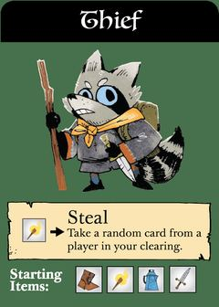
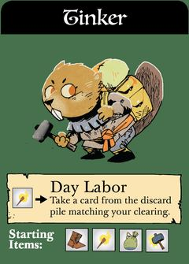
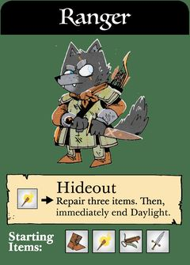
Thief steals a random card · Tinker takes a matching card from the discard pile · Ranger hides out to repair 3 items.
In battle
His rolled hits are capped by his undamaged swords. Each hit he takes damages an item. With no undamaged sword he is defenseless. A revolt or Favor card in his clearing damages 3 items.
Tip: crafting an item he wants is an easy way to win his favour. If he gets too strong, hit him when he is light on swords: a sound beating sends him to the forest for a turn.
54 cards, four suits
The deck
Every card in the shared deck. The black badge is the number of copies. Full table with costs: cards/deck.md.
With 10+ points, play a dominance card in Daylight. Your score marker leaves the track: no more points, ever.
Fox, rabbit or mouse: win if you rule 3 clearings of that suit at the start of your Birdsong.
Bird: win if you rule two opposite corners at the start of your Birdsong.
Spent for its suit, a dominance card goes beside the map. Anyone can take it in Daylight by spending a card of its suit (a bird card for the bird dominance).
The Vagabond can't use it to win alone. In 4-player games he forms a coalition with the lowest scorer and wins if they win.
Not used in 2-player games.
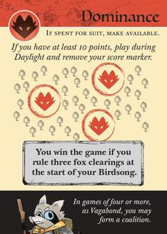
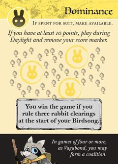
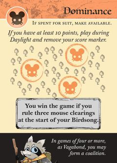
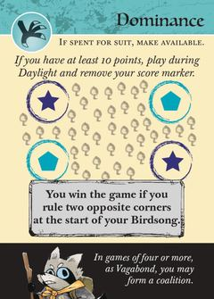
Simulated games
The game, played by bots
A rules simulator plays complete games from setup to the last point. Everything here comes from real runs of it (300 games per player count).
1
Real rules
The engine follows the Law of Root (Oct 2025) for all four base factions: setup, rule, movement, battle with ambushes, crafting, dominance (coalitions are in the engine and tested, but the bots never form one), Decree and turmoil, revolts and Outrage, Vagabond items, quests and relationships. 12 rule scenarios, data and setup checks, and invariant checks over 300 full games.
2
Real cards
All 54 deck cards with their printed costs and effects, the 4 Eyrie leaders, 3 Vagabond characters and 15 quests. Codebreakers and Cobbler are crafted but unused by the bots, and the Vagabond never moves or fights with Allied warriors.
3
Estimates
The Autumn map's paths were read off the map picture. Faction-board numbers the booklets don't show, the dice faces and the deck's copy counts are marked EST in sim/data.py.
4
Bots
One per faction, following community strategy guides: everyone pressures the cats, the Eyrie dry-run their Decree a turn ahead, the Alliance revolts early, the Vagabond quests for cards and turns on a runaway leader, dominance is a comeback play. They still play the Eyrie and Vagabond weaker than good players, so win rates show bot behaviour, not the real game's balance.
One game for every winner and way of winning the bots produced in 300 seeds per player count (torch-marked mixes from Learning to Play p. 22: Marquise + Eyrie, + Vagabond, + Alliance). Each seed replays exactly; click it for the full log.
Run it yourself: python sim/run.py --players 4 --seed 3 prints one game turn by turn; python sim/run.py --batch 300 repeats these statistics; python sim/test_rules.py runs the rule checks.
Mistakes everyone makes
Rules questions
Q.01Can I move from a tied clearing to another tied one?
No. You must rule the clearing you leave or the one you enter. A tie means nobody rules (the Eyrie excepted).
Q.02Can I hit a building while warriors stand there?
No. All of that side's warriors in the clearing go first; only then buildings and tokens. Each building or token removed scores you 1.
Q.03The sword card is in my hand, but no swords are left?
Then you can't craft it. Item cards need the item in the map supply. You can still spend the card for its suit.
Q.04Does battling in a sympathetic clearing cause Outrage?
Only if you remove the sympathy token, or if you moved warriors in. Outrage is about removing sympathy and moving in.
Q.05Can the Eyrie add two birds to the Decree?
No. One or two cards per Birdsong, and at most one of them a bird. In turmoil every bird costs a point, the Viziers too.
Q.06Does Field Hospitals cost a card per warrior?
No. One card matching the clearing saves all the cat warriors removed there at once, as long as the keep is on the map.
Q.07Do I win when I take the third clearing?
No. Dominance is checked at the start of your next Birdsong. Everyone else gets one turn to break it.
Q.08Can two Aids on different turns improve a relationship?
No. The Aids for one step must happen in the same turn. Each Aid also needs a card matching the Vagabond's clearing.